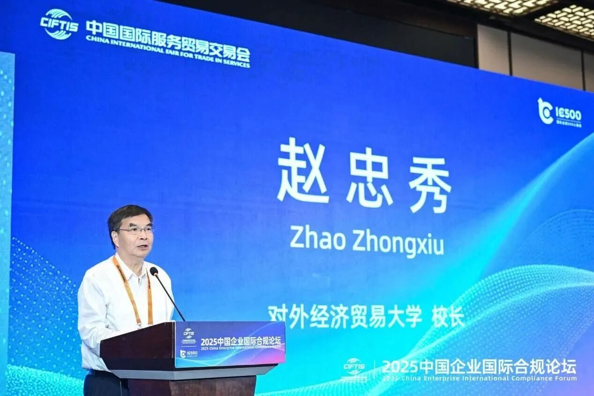
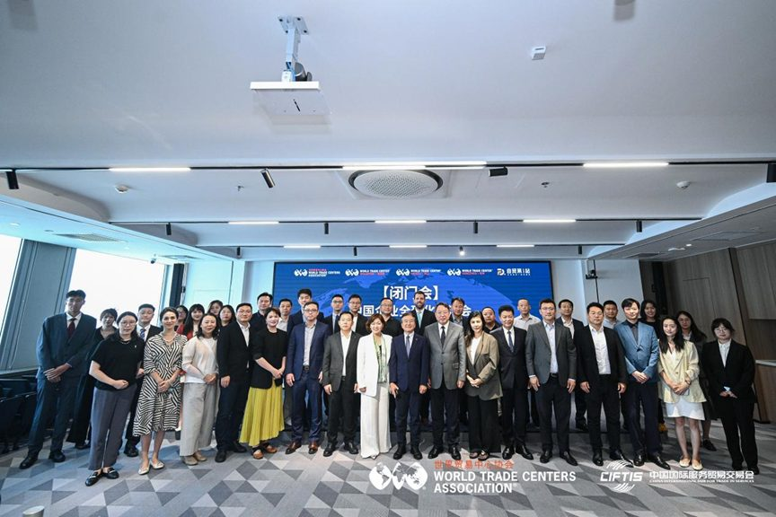
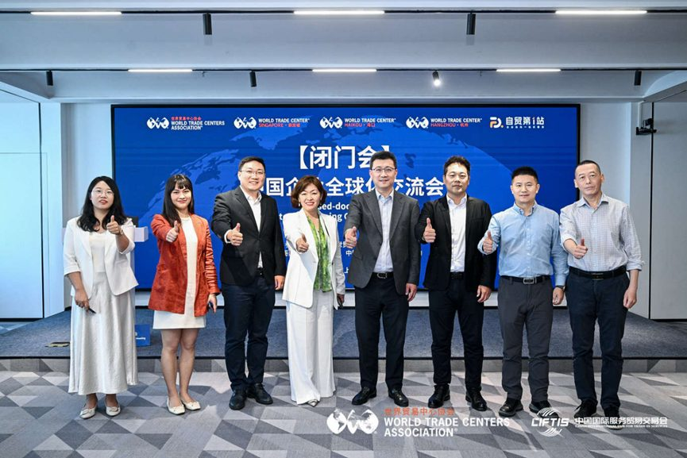
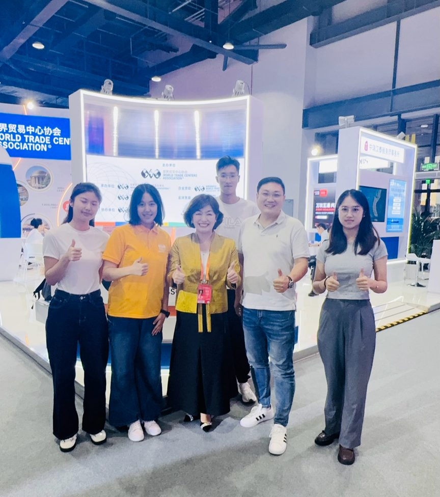

杨浦区政府英文门户报道：董立鑫出席 CIFTIS 2025
Yangpu District Government (English) features Bruce Dong at CIFTIS 2025 — on Chinese enterprises going global.
第三方媒体报道：上海市杨浦区人民政府英文门户（English Yangpu）报道海鑫汇创始人兼CEO、新加坡世贸商务总监（Business Director, WTC Singapore）、和君咨询合伙人董立鑫以对外经贸大学阿波罗投资俱乐部出海专委会执行秘书长身份，出席 CIFTIS 2025 中国国际服务贸易交易会杨浦分论坛，就中国企业出海与跨境合作议题分享实践。来源：杨浦区政府英文门户。

报道概述
杨浦区政府英文门户（English Yangpu）发布报道，将海鑫汇 Global Talent Network 创始人、和君咨询合伙人董立鑫列为对外经贸大学阿波罗投资俱乐部出海发展专委会核心成员，参与 CIFTIS 2025 同期由 WTCA 世界贸易中心协会主办的"中国企业出海交流会"闭门对话。

身份与定位（报道原文要点）
报道中董立鑫的身份表述为对外经贸大学阿波罗投资俱乐部出海专委会执行秘书长，此身份对应 CIFTIS 2025 同期 WTCA 世界贸易中心协会主办的"中国企业出海交流会"闭门对话（见下方"WTCA 闭门会"系列照片）。同期，董立鑫在服贸会新加坡世贸（WTC Singapore）专区，以新加坡世贸商务总监（Business Director, WTC Singapore）身份参与（见下方"CIFTIS 展台现场"照片），现已升任新加坡世贸秘书长兼首席运营官（Secretary-General & COO, WTC Singapore）。


原文链接
本报道首发于杨浦区政府英文门户（English Yangpu）。 查看官方原文 →